Bird of Paradise, Golden Pothos, and Plant Stand.
Inspired by my own houseplants, I decided to create two potted plants (Bird of Paradise and Golden Pothos) with a wooden plank plant stand to create a garden scene. Here’s my initial sketch and idea: To explore different ways of creating plants, I followed several YouTube tutorials and eventually settled on this one.
Following the tutorial, I started by modeling the shape of the pot, creating uneven surfaces to resemble soil, and using a Bézier curve to shape the stems of the Golden Pothos.
To explore different ways of creating plants, I followed several YouTube tutorials and eventually settled on this one.
Following the tutorial, I started by modeling the shape of the pot, creating uneven surfaces to resemble soil, and using a Bézier curve to shape the stems of the Golden Pothos.
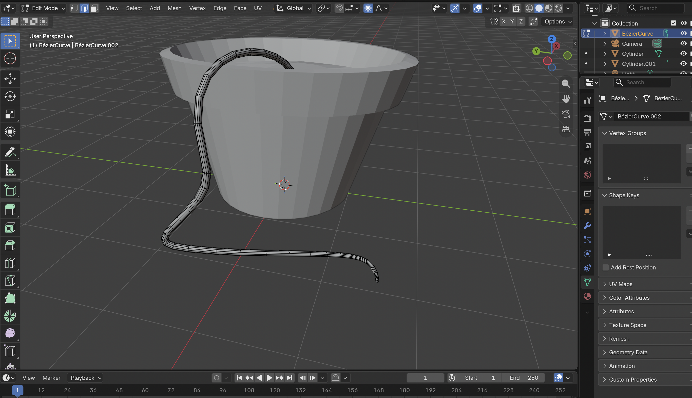
By using “Particle System”, I was able to use “Hair” to create paths for the leaves to grow on.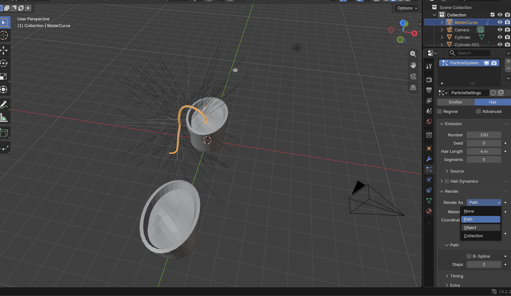
In order to make the rendering more realistic, I traced a pothos leaf based on a reference image that I would use for shading. In the shader editor, I was able to apply the leaf image as a material for the leaf shape that I just traced.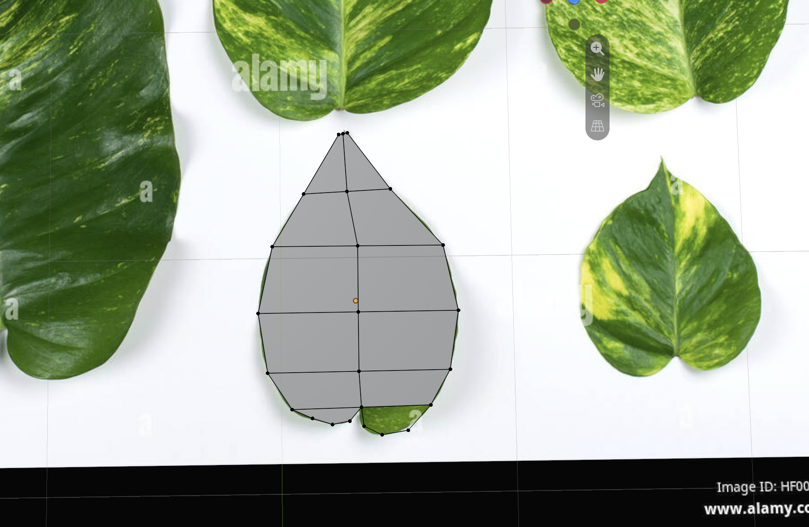
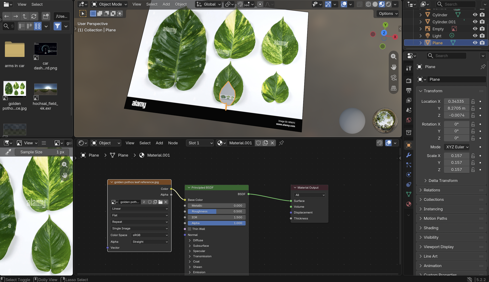
Moving on to the Bird of Paradise plant, I started by modifying the duplicated plant pot. I shaped the stems using cylinder objects and created the leaves using plane objects. I then applied shading to the leaves in the Shading Editor.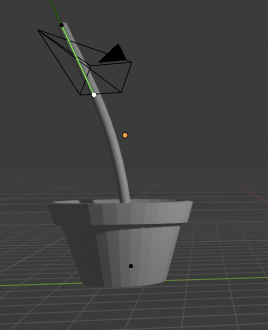
Then, I moved on to creating the plant stand. The stand was created by using loop cuts and excluding the legs for the stand.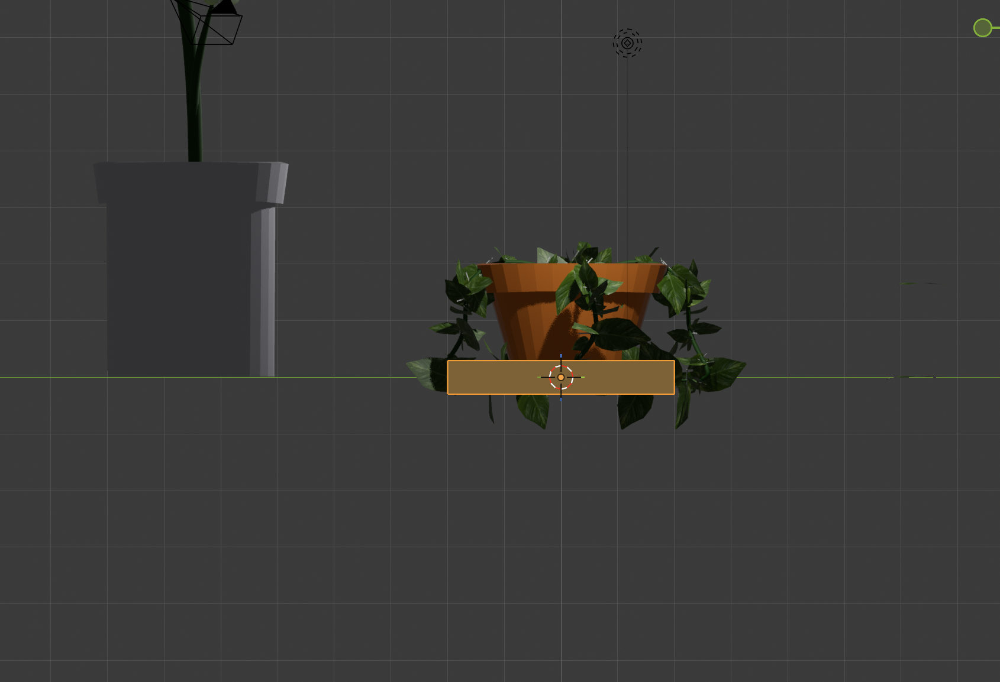
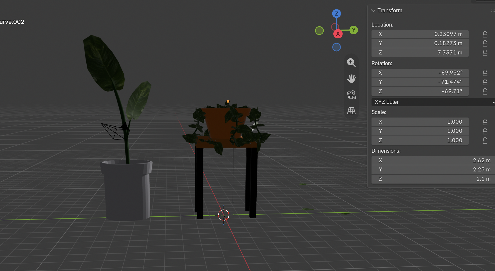
I started by applying an HDRI to the world, but I realized that the scene looked distorted and misaligned with the origin, making the objects appear as if they were floating in midair. To create a more realistic environment with proper alignment to the origin, I followed a tutorial on creating a dome to serve as the environment for the shading. After creating the dome and flipping the faces inward, I went into the Shader Editor and applied nodes that allowed me to see how the inward-facing surfaces looked from the inside. I then adjusted the shading along the Z-axis to better align the ground with the origin.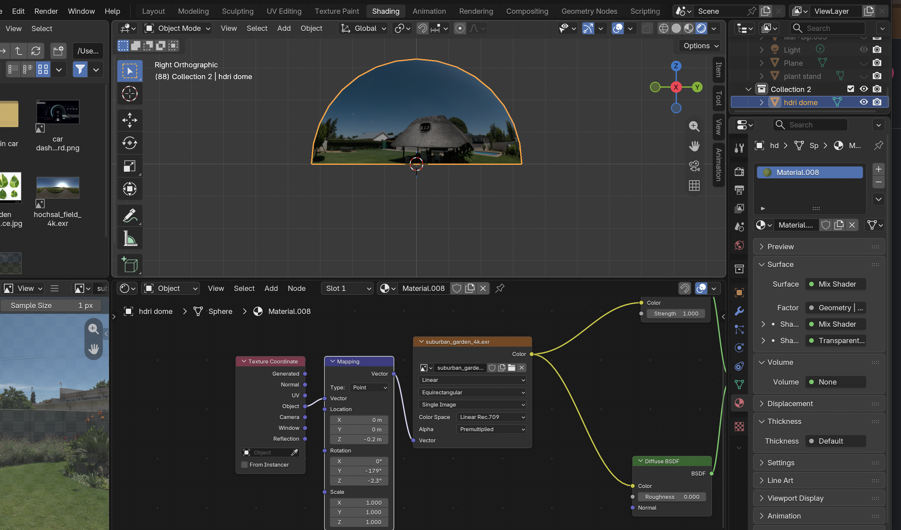
As I was attempting my first render, I noticed a large gray obstruction in front of the camera. After discussing the issue with my professor, I realized that it was caused by the size of the frame, and I was able to fix it.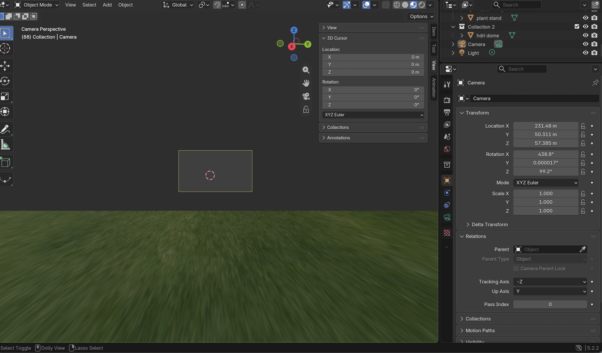
Here are my 3 final renders: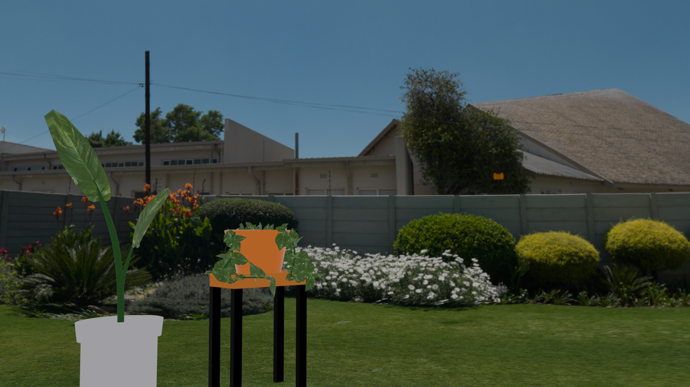
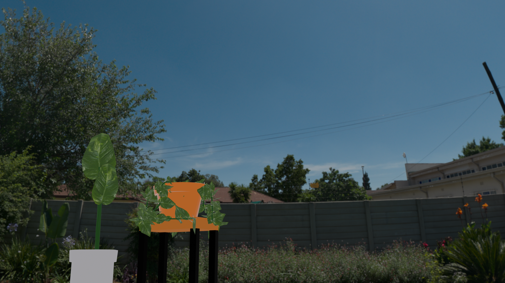
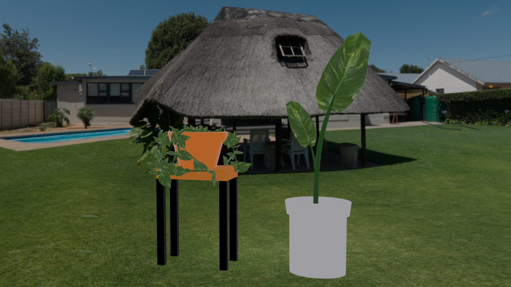